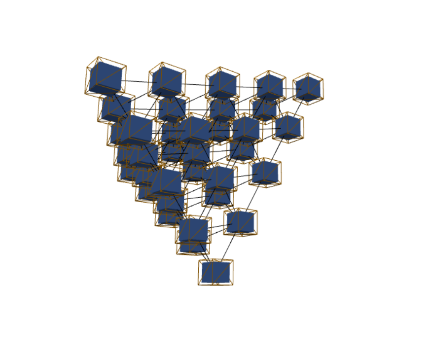

-
Joshua Moore's Portfolio

-
Joshua Moore does database and web development for fun and profit.
Josh writes all code by hand, but does read AI summaries where he previously would have perused and asked Stackoverflow. He has worked with some heavy SQL, but enjoys the quiet simplicity and breadth of HTML, Javascript, and CSS.
Josh lives in the greater Las Vegas area, speaks fluent English and German, and enjoys swimming, table tennis and chess. He loves listening to music.
-
Eight Queens
-
The object of this riddle is to arrange eight queens so that no two queens threaten each other. The queen in chess moves any number of fields, in any direction: vertically, diagonally, or horizontally.
Click a field to place a queen, click it again to remove the queen.
Enter your name on your browser's high score board when you successfully place all eight queens.
Live 🔗 Code 🔗 -
Notebook
-
This Javascript/Typescript/Markdown notebook aims to do for Javascript what the prized Jupyter Notebook did for Python.
Write Javascript or Typescript code in a cell, and document your source in Markdown. Hit Ctrl-Enter to run a code cell or render a markdown cell.
Double click a markdown cell to edit it. See what your code is doing via console.log or return statement. Returned HTMLElements are simply appendChild()ed to the cell's output, so you can construct simple UIs in your notebooks. Reuse global variables across cells
Save the notebook as a file on your computer, as a localStorage entry, or submit it as a POST request. Open notebooks from file, localStorage or URL.
Live 🔗 Code 🔗 -
Graph Editor

-
The goal of this project is to build an intuitive, visual and scriptable graph editor. To make the graph editor scriptable, the notebook exposes a context "graph" variable to all cells. It's not done yet, but you can kinda tell where I'm going with this...
The graph visualization itself is inspired by a 2007 paper by Dr. Veldhuizen.
Live 🔗-
Sample Files:
- About
- Pyramid Notebook
- Pyramid Graph
- MicroGrad Visualization
-
Contact
-
You can reach me at joshua.moore@verticesandedges.net
- ↺ Flip Page
-
Joshua Moore's Resume
-
Joshua Moore does database and web development for fun and profit.
He has worked everywhere from video game testing outfits, to startups, mid-sized companies, and corporate environments.
Josh writes all code by hand, but does read AI summaries where he previously would have perused and asked Stackoverflow. He has worked with some heavy SQL, but enjoys the quiet simplicity and breadth of HTML, Javascript, and CSS.
-
Independent Contractor (Software Development)
December 2025, North Las Vegas, NV
-
Worked with a former employer to update Angular project versions.
- Angular
-
Self Employed (Independent Contractor)
2019 - 2024, Las Vegas, NV
-
Subcontracted on smaller projects, and worked on own endeavors.
- Docker, docker-compose
- Apache 2, Reverse Proxy
- ExpressJS
- Passport
- Self-starter
-
2C Processors (Senior Software Developer)
2018-2019, Summerlin, NV
-
Ported the company flagship application to Mono.Net, enabling it to run on Linux.
- Mono.NET
-
Hirschi Masonry (Systems Engineer II)
2016 - 2018, North Las Vegas, NV
-
Started as a Systems Analyst before getting promoted to Systems Engineer I and II successively assuming more independence and responsibility for development projects.
Co-responsible for smooth performance of all of company's IT operations, including tech support.
- MSSQL, MariaDB
- VB.NET
- Drupal/PHP7/Composer
- Git/Selfhosted Git Servers
- HTML, JS, CSS
- Apache Server 2, Reverse Proxy
- Centos Linux
- Reports Server
- SSL Certificates (LetsEncrypt)
- SSH Key Management
- Initiative
- Follow Through
- In-person and remote Tech Support
-
Accretive Technology Group (Software Developer)
2014 - 2015, Seattle, WA
-
Developed an application for creating and storing search queries over customer databases to assist in marketing research.
- Python/Flask
- AngularJS
- JIRA
- Cross Department Communication
-
Knotis (Mobile Software Developer)
2012 - 2014, Seattle, WA
-
Recruited by a former neighbor to develop the company's first mobile application, a tool for scanning QR codes from coupon books to local businesses.
- OAuth (implemented from RFC)
- Python/Django Server
- Apache Cassandra
- Apache Cordova
- Teamwork
- Mentorship
- Self Reliance
- Initiative
-
Swiss Post Solutions Bamberg (Technical Project Manager/Software Developer)
2011 - 2012, Bamberg, Germany
-
Developed encrypted, traceable and auditable database applications in MSSQL, as well as input forms.
After some warm-up projects, assumed successively more challenging projects and responsibilities, including participation in technical strategic planning sessions.
Refactored legacy projects for performance, developed own projects, and collaborated with coworkers, both Junior and Senior, to achieve optimal coordination among project components.
Advanced to amending standard operating procedures, planning project implementations, estimating project delivery, and mentoring Junior coworkers.
- C#, WinForms
- MSSQL: tables, stored procedures, views, triggers
- Technical writing
- Waterfall project estimation (Fibonacci estimates)
- Cross project communication
- Cross department communication
- Independent research
- Design patterns
-
Seattle Marketing and Communications Department (Independent Contractor)
2010 - 2011, Seattle, WA
-
Hired by a former professor leading the marketing department to write XSLT, HTML, Javascript and CSS to embed a Google Maps widget within pages served via content management system.
- Ektron CMS
- Google Maps Widget
- XSLT
- HTML, JS, CSS
- Independent Learning
- Experimentation
-
Averetek (Junior Software Engineer)
2010, Lynnwood, WA
-
Offered a noticeable time improvement to the login form of an otherwise mature platform.
- MSSQL
- Telerik Controls
- ASP.Net
- JIRA
- N-Tier Architecture
-
ElectroImpact (Software Engineering Internship)
2009, Mukilteo, WA
-
Housed in a factory building in Mukilteo, WA, wrote an applicant testing system allowing engineering applicants to upload images of their solutions, to be graded by Senior Engineers, who could invite them by sending them a link via email.
- ASP.NET
- MSSQL
- Web Forms
-
Subcontractor (Video Game Tester)
2007, Bellevue, WA
-
Following up on a job listing sent by stepdad, successfully applied to test games on XBox as well as Guildwars' Eye of the North extension, which went on to win an award for its outstanding German translation.
Improved testing workflow by introduction of multicursor document editing software.
- Testing under Lab Conditions
- Organization and Teamwork
-
- ↺ Flip Page